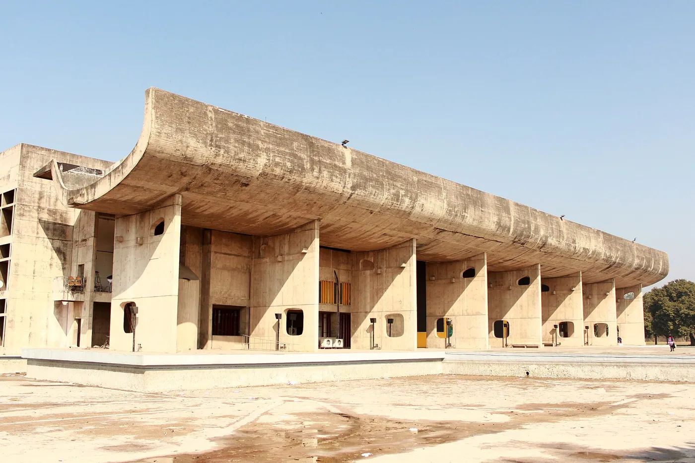
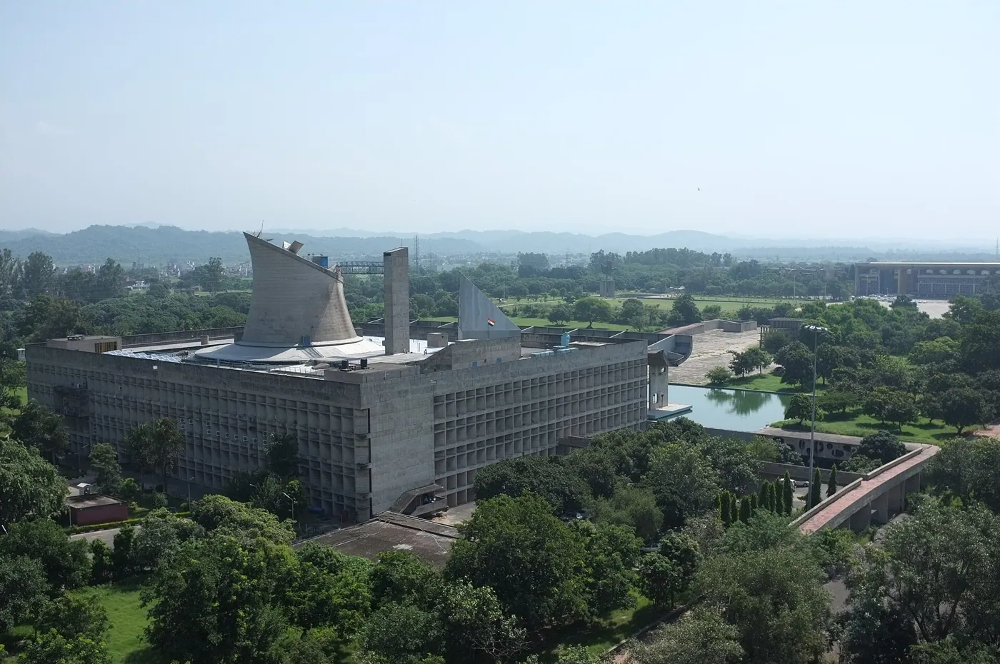
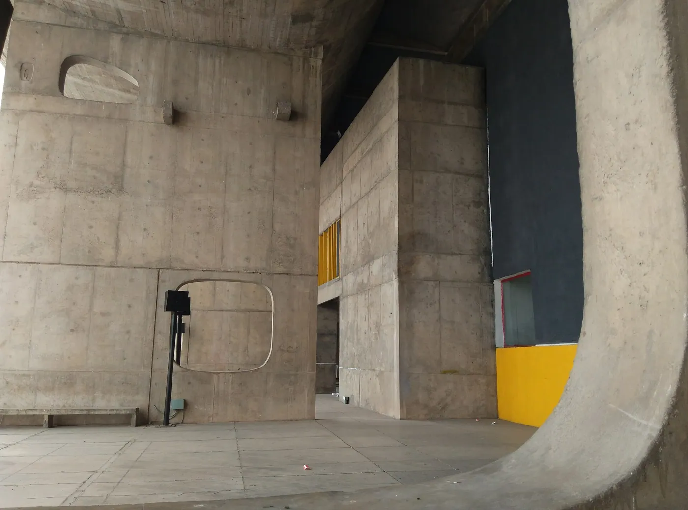
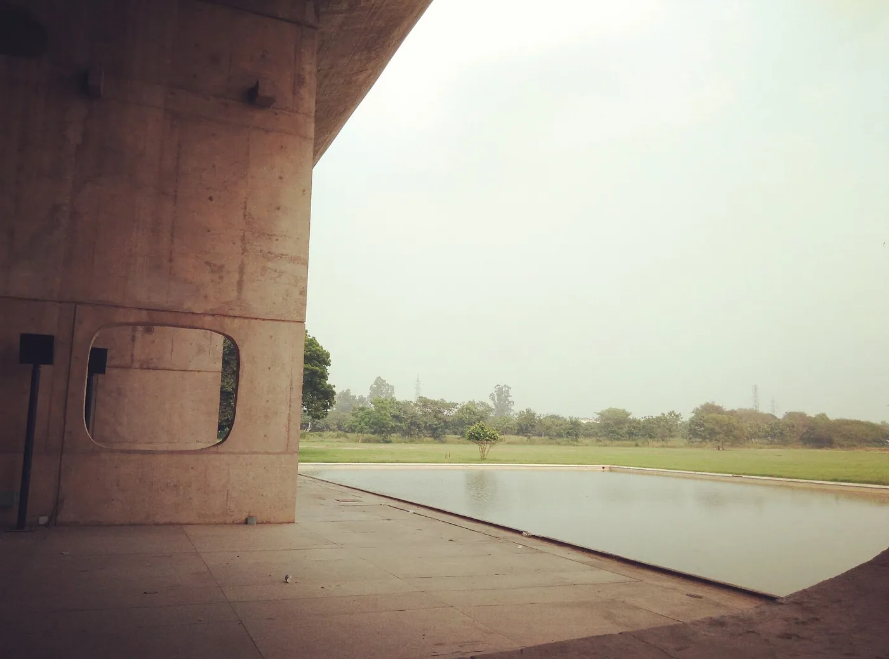
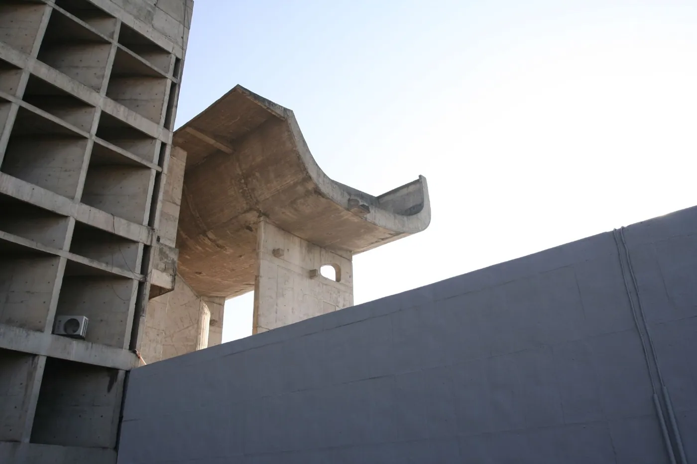
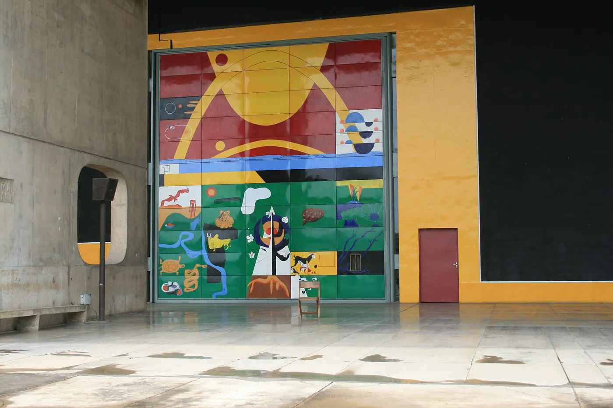

1/8 · ExteriorPhoto: UnpetitproleX · CC BY-SA 4.0 · source

2/8 · Exterior · Assembly building, Chandigarh, IndiaPhoto: Tanweer Morshed · CC BY-SA 4.0 · source3/8 · Exterior · by Le CorbusierPhoto: Aleksandr Zykov from Russia · CC BY-SA 2.0 · source

4/8 · Context · by Le CorbusierPhoto: Aleksandr Zykov from Russia · CC BY-SA 2.0 · source

5/8 · InteriorPhoto: Nk8595 · CC BY-SA 4.0 · source

6/8 · Interior · Corbu's EntrancePhoto: Eduardo Guiot · CC BY 2.0 · source

7/8 · Interior · From the mind of Le CorbusierPhoto: Lian Chang from New York City · CC BY 2.0 · source

8/8 · Detail · Corbu's DoorPhoto: Eduardo Guiot · CC BY 2.0 · source